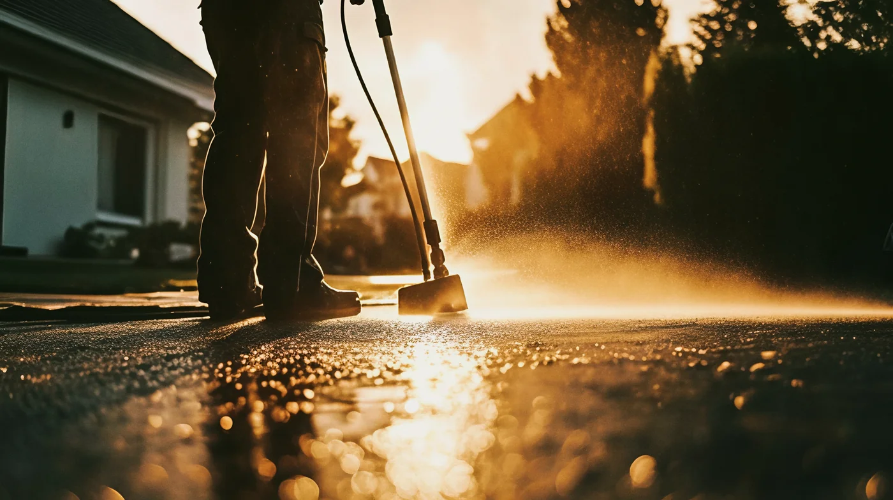
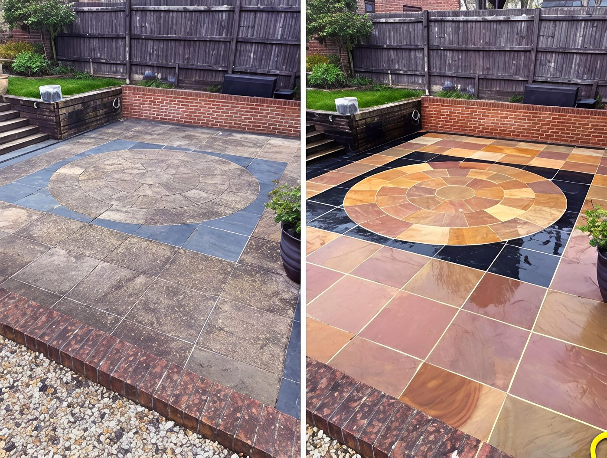

Driveway & Flatwork
Concrete, asphalt, pavers, walkways, and steps. We use a professional rotary surface cleaner — no zebra stripes, no damage, just an even, thorough clean that holds up.
Learn more →Worcester, MA & the 495 Corridor
Cornerstone Exterior Cleaning Services — professional pressure washing and soft washing for homeowners and commercial properties across Worcester and the surrounding towns. Driveways. House siding. Windows. Done right, every time.

What We Do
Every job gets the same standard of care — whether it's a quick driveway clean or a full exterior wash. Not a franchise. Not a crew of strangers. Someone who answers for the work.
Concrete, asphalt, pavers, walkways, and steps. We use a professional rotary surface cleaner — no zebra stripes, no damage, just an even, thorough clean that holds up.
Learn more →Low-pressure, high-result exterior house washing. Safe for vinyl siding, wood, stucco, and painted surfaces. Kills mold and algae at the source so it stays clean longer.
Learn more →Streak-free exterior window cleaning. We work carefully around screens, sills, and trim — no ladders left unattended, no drips, no shortcuts.
Learn more →Deck & patio, fence washing, gutter brightening, plus retaining walls, outdoor furniture, trash bins, and commercial work — if it's on the outside of your property and needs cleaning, ask us.
See all services →
Why Cornerstone
We started Cornerstone because we believe that good work matters — not just as a service, but as a way of life. We're a Christian-owned small business based in Worcester, MA, serving homeowners and businesses across the greater Worcester area.
We show up when we say we will. We protect your landscaping. We don't rush a job to get to the next one. And when it's done, it looks right — because that's the standard we hold ourselves to.
"Whatever you do, work heartily, as for the Lord and not for men."
— Colossians 3:23What You Can Expect
We show up on time.
No vague arrival windows. We tell you when we'll be there and we're there.
We protect your property.
Landscaping covered, cars moved if needed, nothing left damaged or dripping.
We don't leave until it's right.
No rushing to the next job. If it doesn't look right, we fix it before we go.
If something isn't right, we make it right.
No argument, no runaround. That's the guarantee.
We communicate clearly.
Before, during, and after the job — you always know where things stand.
Cornerstone is a Christian-owned business. The name isn't incidental — a cornerstone is the first stone set in a foundation, the one everything else aligns to.
For us, that foundation is Christ. And that changes everything about why we work the way we do. We don't do good work to impress customers or build a reputation. We do it because we believe that excellent work — done honestly, with care — is an act of worship.
Abraham Kuyper said it plainly: "There is not a square inch in the whole domain of our human existence over which Christ does not cry: Mine!" Every job we take is part of that domain. We take it seriously because Yahweh is Lord of all, including our work.
"He has told you, O man, what is good; and what does the Lord require of you but to do justice, and to love kindness, and to walk humbly with your God."
— Micah 6:8Where We Work
We serve Worcester and the surrounding communities — roughly a 30-minute radius. Not sure if you're in range? Just call. Odds are we can get to you.
Don't see your town? Give us a call — we'll let you know.